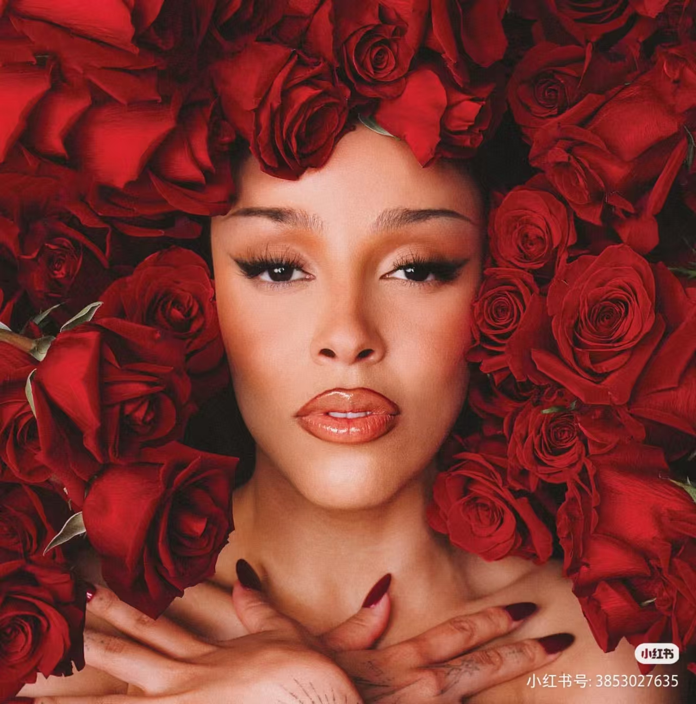
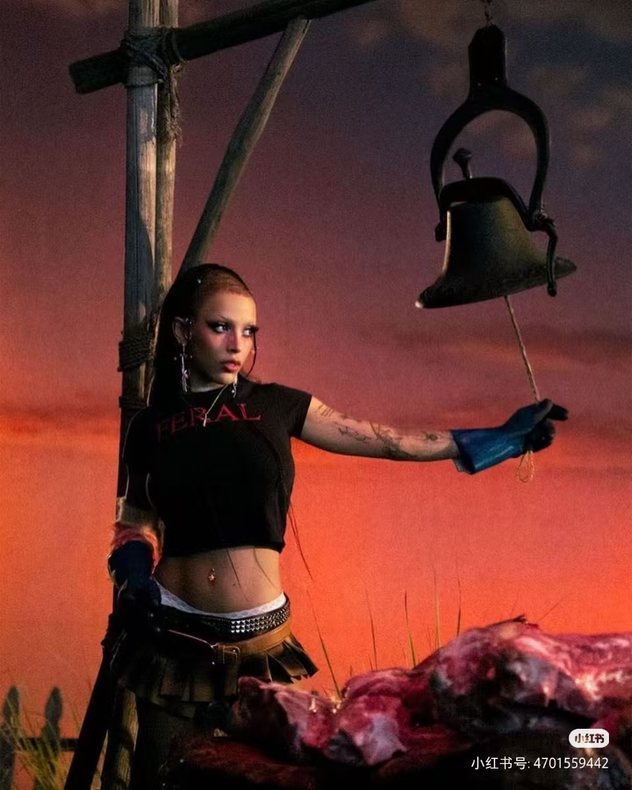
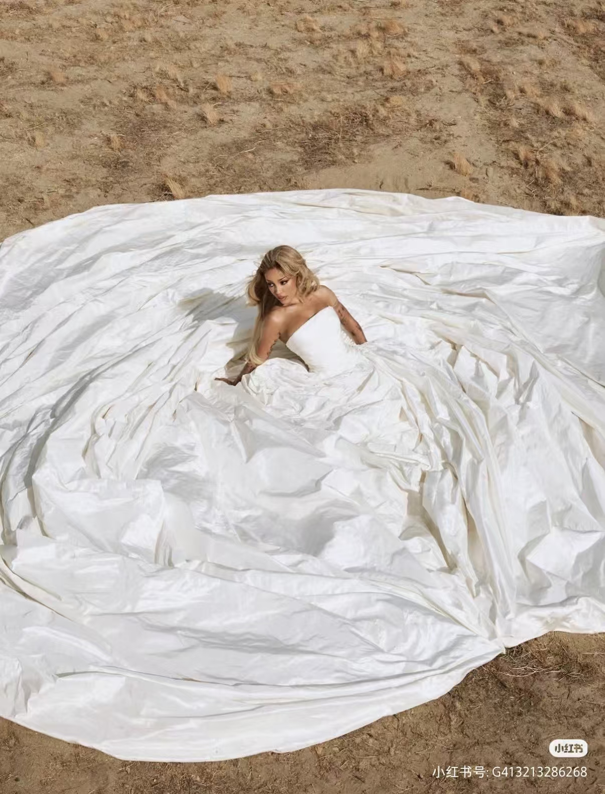
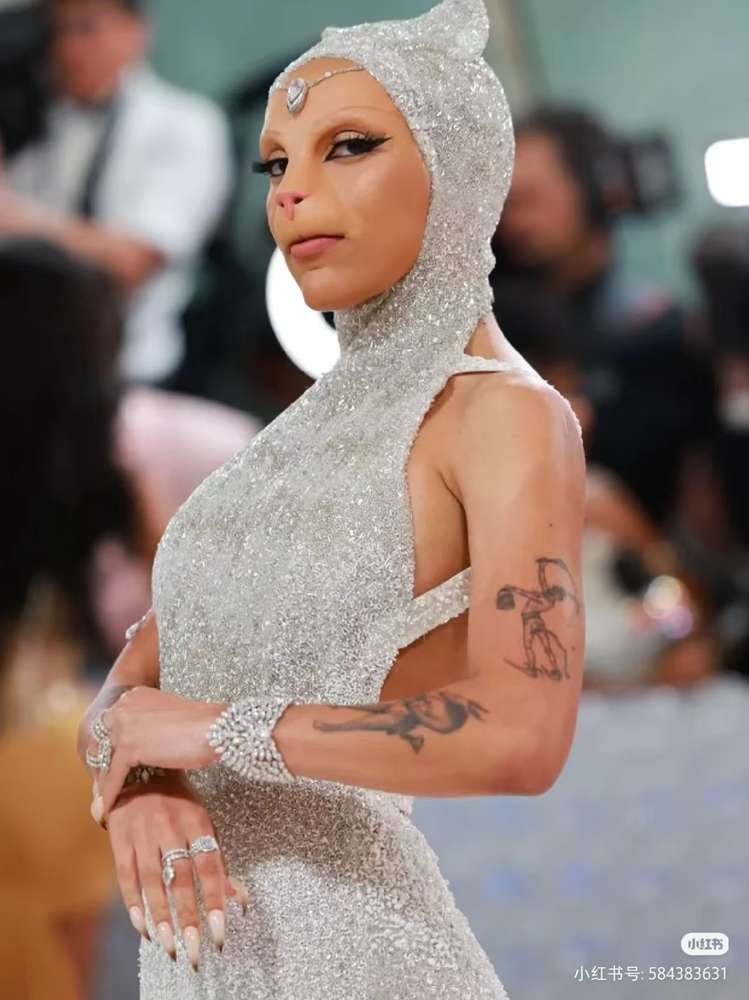

From SoundCloud to superstardom. Doja Cat blends hip-hop, pop, R&B, and internet culture into something entirely her own. Scarlet marked a darker, more experimental era — and Paint the Town Red became the song of 2023.
Debut album. So High and Go To Town established her quirky, genre-blending style. Largely overlooked at first, but a cult favorite.
Debut eraBreakthrough. Say So went viral on TikTok and became her first #1 hit. Juicy and Rules showcased her versatility. A pop star was born.
BreakthroughCommercial peak. Kiss Me More with SZA won a Grammy. Woman, Need to Know, Get Into It (Yuh) — every track a potential single. 3 Grammy nominations.
Grammy winnerA radical departure. Darker, more hip-hop focused. Paint the Town Red spent 3 weeks at #1. Agora Hills and Demons showed her range. Shaved head, blood red — a new era.
Experimental eraFirst arena headlining tour. A theatrical, horror-inspired stage show. Ice Spice and Doechii opened. Sold-out shows across North America and Europe.
Arena tourRejecting the pop star label, Doja returned with Scarlet — a raw, hip-hop heavy album. Paint the Town Red sampled Dionne Warwick and dominated the charts. A middle finger to expectations, wrapped in blood red.




A rejection of pop stardom. Doja Cat raps more than she sings on Scarlet, delivering some of her most personal and aggressive verses. Paint the Town Red became her biggest solo hit. Agora Hills showed her softer side. An album that defies categorization.
The songs that define the journey — from viral meme to Grammy winner.